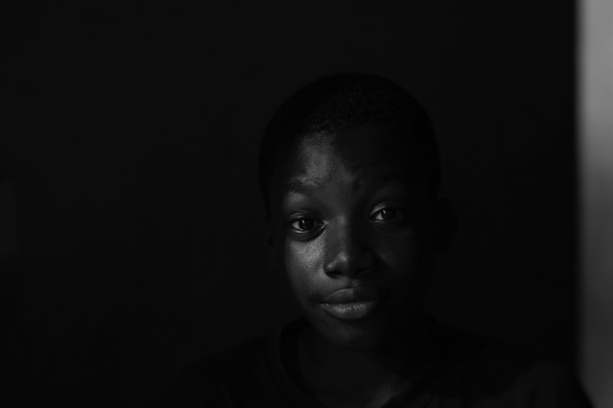

The Warrior Intelligence Tracker captures your crisis in real time, building longitudinal evidence that changes what happens when you walk through that ER door.
Your data is never shared with insurers, hospitals, or employers. Submissions are anonymous and consent-based. This data belongs to the Warrior community, not to any institution.
You were born with this, and you have spent your life explaining it to rooms that forget between visits. This is where what you carry gets counted, and kept.
Source: Warrior Intelligence Project anonymous self-reported submissions, December 2025 to September 2026. 145 crisis submissions logged by 113 Warriors. Because every submission is anonymous, location is derived from the hospital a Warrior named and the area code of the number they gave for check-ins. Warriors have logged from the USA, UK, Nigeria, Canada, Finland, and China. The protocol figure is drawn from the 81 Warriors who reported having a pain protocol. These numbers move as new crises are logged.
ER decisions are made in seconds using a single lab value or pain score, while your crisis has been building for days or weeks. That gap isn't a compassion problem. It's a design failure. WIP closes it.
I was admitted in November for a week. Since then my crisis has been on going coming and going. I have been to the emergency room twice In the month of January. Both times they have sent me home because my retic count didn’t show I was in a crisis after I begged them to admit me. The admitting doctors excuse was the pca pump is for serious crisis and she doesn’t want me to get addicted to the morphine in the pca pump so she’s not going to admit me and if my crisis gets worse to just come back to the ER.WIP Warrior
I hate being treated as an addict rather than a patientWIP Warrior · New York Presbyterian Brooklyn Methodist
They qualify for a salaried role within the healthcare system. Instead, their expertise is erased at the threshold.Hii White Paper, v2.7
ER decisions rely on a single moment while crises behave like trajectories.
Triggers like thermal shock and hormonal cycles dismissed as "anecdotal."
Warriors who manage complex regimens at home are treated as rookies in the ER.
No accounts. No medical records. No gatekeepers. Just you, your crisis, and a tracker that treats your experience as the intelligence it actually is.
See how it works. Under 3 minutes, 100% anonymous
Fill out the Warrior Intelligence Tracker in under 3 minutes from any phone or browser, during or after a crisis. Pain level, triggers, ER experience, protocol adherence.
Every entry creates longitudinal evidence. When you walk into the ER, you carry a documented trajectory, not just a moment. That changes the encounter.
Your data compounds with the community's. Patterns surface. Data briefs are generated. Hospitals, funders, and policymakers see what they've been missing.
Sickle cell doesn't stop at adulthood. Warriors' data spans pediatric crises, adolescent transitions, adult independence, and elder care, captured in real time by the Warriors and caregivers who live it.

Warriors have logged 145 crisis submissions since December 2025. What follows is what they reported, with the number of submissions behind every figure. This is what happens when the community owns the data.
How to read these numbers. Every figure below is what Warriors reported about their own crises. They are patterns in lived experience, not clinical determinations, diagnoses, or medical advice. Denominators differ because not every question applies to every Warrior, so each figure carries the count it was drawn from.
Source: WIP anonymous self-reported submissions, December 2025 to September 2026. Every figure is drawn directly from the Warrior Intelligence Tracker and is community-reported. Data updated continuously as new episodes are logged.
Life continues between the data points. That's the story numbers alone can't tell.
The lived experience of warriors is not anecdotal evidence.
It is real data, real intelligence.
Beyond the ER: The Data That Can Transform Sickle Cell Care
June 22, 2026 · Jason Robert MooreWarrior Intelligence: A Community-Led Navigation Infrastructure for Real-Time Sickle Cell Crisis Data and Clinical Blind Spot Detection
June 23, 2026 · Jason Moore · Vol. 3, Supplement 1 · Peer reviewed, open accessPeople Living with Sickle Cell Disease Share Their Experiences · Special Report: Innovations in Sickle Cell Disease
September 17, 2024 · As told to Roxanne Scott · Jason Robert Moore, Vice President, Sickle Cell Warriors of BuffaloTwo weeks before WIP existed, this is what its founder was already telling national media: rationing hospital visits to protect medication efficacy, timing arrivals around shift change to be seen faster, and the disability filing that ended his last job. WIP is the infrastructure built to make that testimony structural, not anecdotal.
Every entry you submit makes the next Warrior's ER encounter harder to dismiss. It takes under 3 minutes, and it's completely anonymous.
WIP is governed by Warriors and guided by research ethics. Every major decision, including who accesses data, what research gets approved, and how the platform evolves, is made transparently. Warriors vote on major changes. Researchers must earn Governance Council approval.
Warriors: Elected annually by the community. Community Health Worker: Jason Robert Moore, Sickle Cell Warriors of Buffalo.
Research ethics expertise, patient rights representation, and caregiver advocacy partners guide decisions without voting authority.
Who can access data? What research gets approved? How is WIP run? All Council decisions are public and traceable.
You control every aspect of your data. Every crisis you log has three sharing levels. You can change these settings anytime. You can withdraw from WIP entirely. No questions asked.
Your crisis log is yours alone. Researchers cannot access it. WIP can only use aggregated, de-identified patterns to detect community-wide trends.
Approved researchers can access your data for analysis. Your name stays hidden. You decide what fields they can see.
Your story can inspire and inform. Public submissions feed the dashboard, research publications, and institutional briefings, with your consent to share.
You can delete your data anytime. You can change sharing levels on individual submissions. You can withdraw consent for specific research projects. Your privacy controls are in your hands.
WIP is built on mutual respect. Warriors own their data. Researchers must earn trust. Institutions must follow Warriors' rules. Here's what that means in practice.
You submit data. You control it. You decide who sees it. You can delete it. Institutional partners never own your crisis logs. They borrow access with your permission.
Research requires IRB approval, Governance Council approval, and written commitments to Warriors. No data access without these checkpoints. Researchers must acknowledge Warriors in publications and share findings before they publish.
Your data is never sold. Your data is never shared with insurers, employers, or marketing firms. WIP is not a surveillance tool. It is evidence infrastructure built by Warriors, for Warriors.
Your initial consent covers crisis logging. Every research project that uses your data requires a separate approval decision from you. You can grant, deny, or revoke access per project.
Warriors' data generates real institutional change. Research findings get published. Hospitals change protocols. Policy makers see evidence they've never seen. WIP's ethics are designed to ensure Warriors benefit from the data they create.
Warriors' data is evidence infrastructure. It exists to strengthen institutions AND to shift power back to Warriors. That dual commitment is what makes WIP different, and what makes it worthy of your trust.
Share the tracker with your Warriors, receive community-specific data briefs to strengthen grant applications, and add real evidence to your advocacy work. We're actively onboarding CBO partners now.
Partner With WIP →